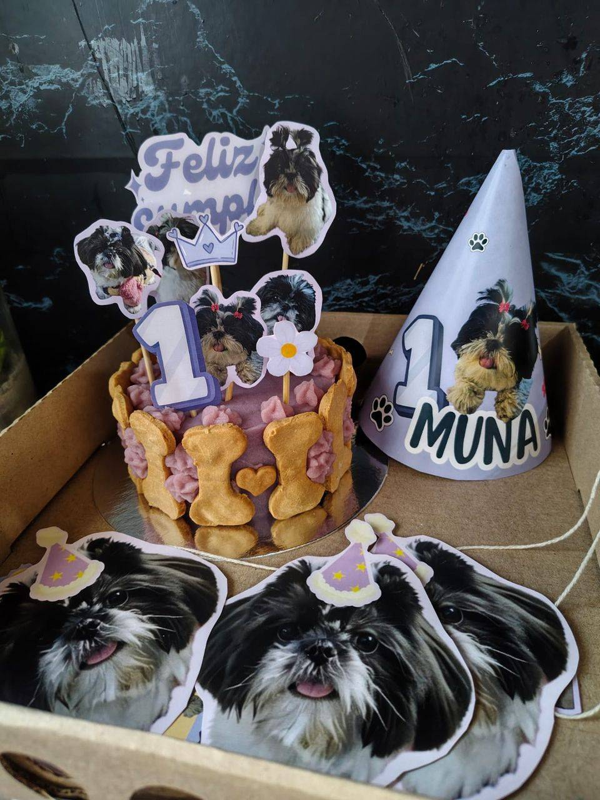
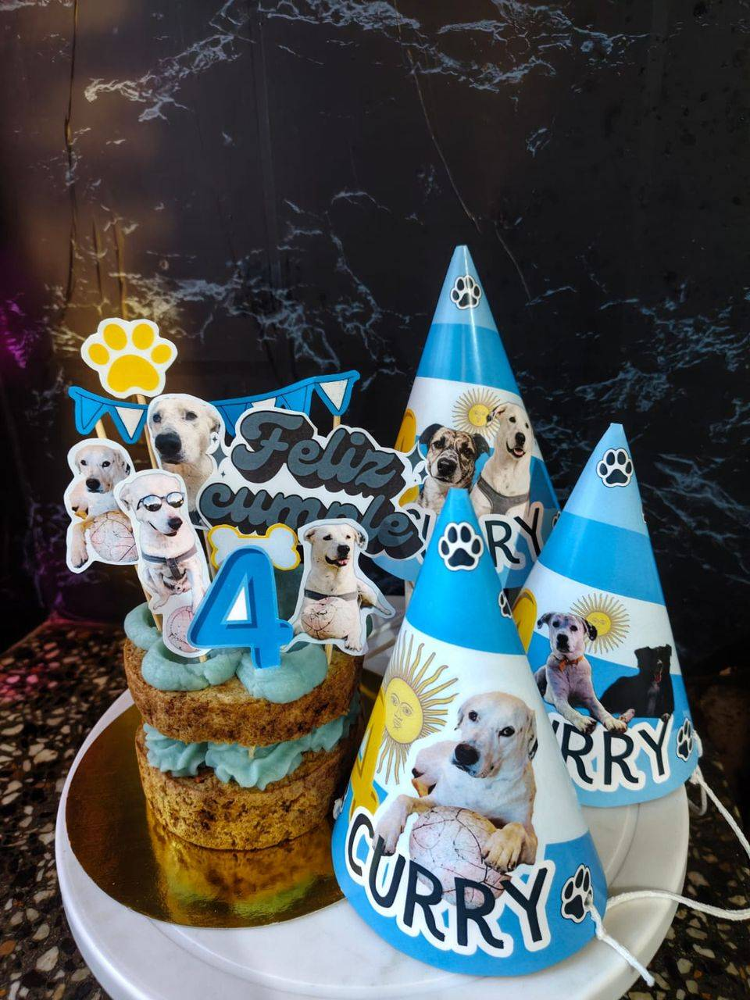
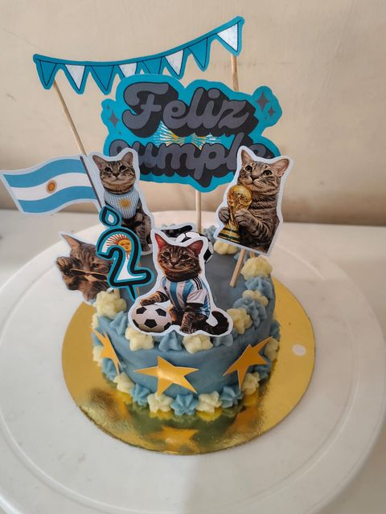
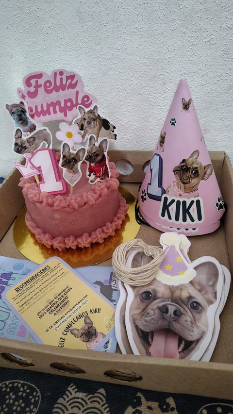
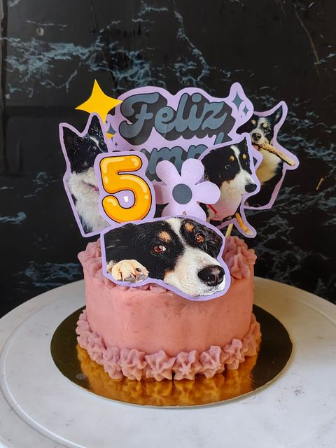
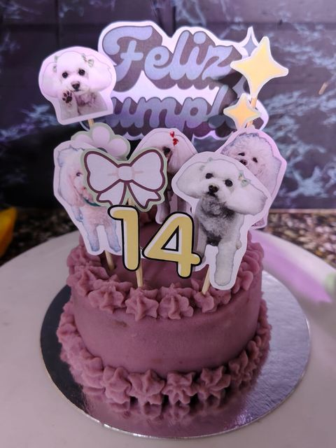
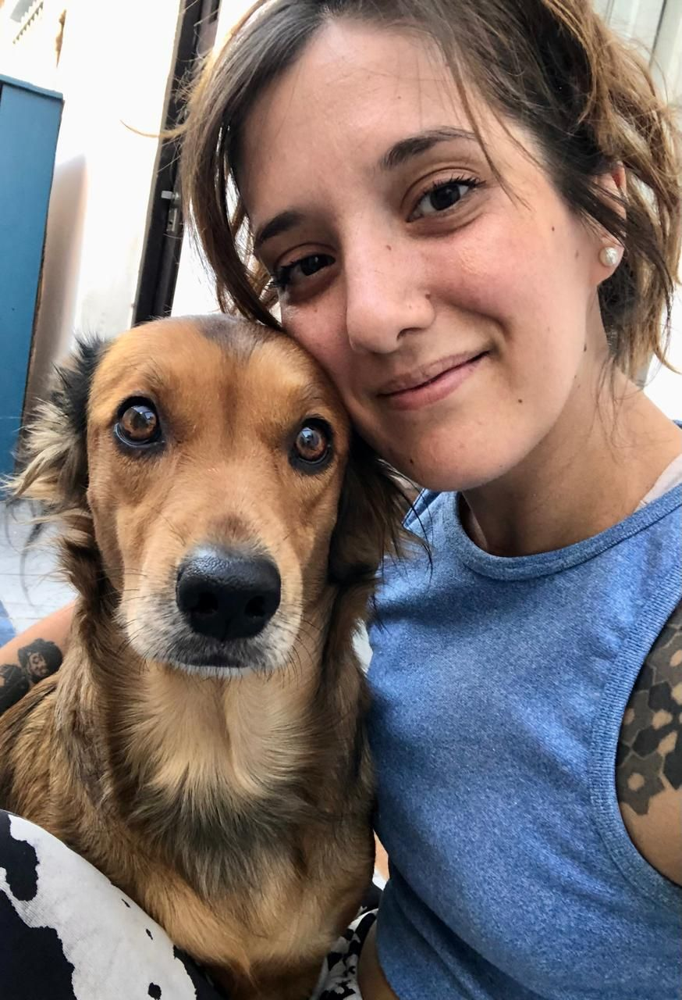

Galletas que mueven colitas
Tortas, galletitas y snacks artesanales para perros y gatos, hechos a mano por Ailu y Poppy. 100% naturales y sin conservantes.

Cómo trabajamos
-
100% natural
Ingredientes simples y sin conservantes.
-
Perros y gatos
Gustitos pensados para los dos.
-
Personalizados
Con su nombre y su foto en la torta.
-
Hecho en Neuquén
Entregas en Neuquén Capital y alrededores.
¿Qué le preparamos?
Todo se hace por encargo, a medida de cada mascota.

Tortas de cumpleaños
Con toppers con la foto de tu mascota, su nombre y su edad.
Ver tortas
Mini tortas
Un mimo especial, con su nombre en un huesito de galletita.
Ver mini tortas
Galletitas
Huesitos y huellitas horneados, en bolsita lista para regalar.
Ver galletitas
Chocopop
Galletas de algarroba: el gustito a chocolate, sin chocolate.
Ver ChocopopCumpleañeros de Poppy
Algunos de los festejos que preparamos, con el nombre y la edad de cada mascota.






Ailu y Poppy, con amor para animalitos
Poppy Pastelería es el proyecto de Ailu y de Poppy, su perrita, que le da nombre a la marca.
Cada torta y cada galletita se hace a mano, por encargo y con ingredientes naturales, con el mismo cariño que le damos a Poppy.
Conocé nuestra historiaCómo hacer tu pedido
-
Elegí
Mirá los productos y pensá qué le gustaría a tu mascota.
-
Escribinos
Por WhatsApp o Instagram coordinamos el diseño, el nombre, la foto y la fecha.
-
Recibilo
Te lo llevamos en Neuquén Capital y alrededores.

¿Se viene un cumple peludo?
Contanos el nombre, la edad y qué le gusta, y armamos algo único para ese día.